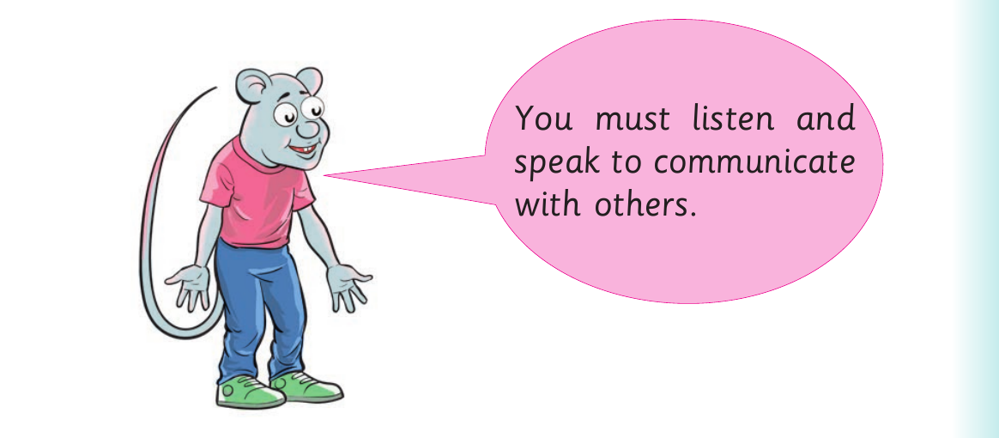
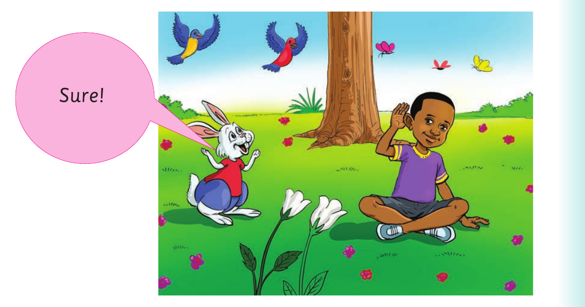

Unit One: Listening and speakingUnit OneListening and speaking

Exact visual panel 1 of 2 from this source page. The page uses visuals as follows: A rat says that learners must listen and speak to communicate. A rabbit answers, Sure. Below, a rabbit speaks with a seated child beside a tree.
You must listen and
speak to communicate
with others.

Exact visual panel 2 of 2 from this source page. The page uses visuals as follows: A rat says that learners must listen and speak to communicate. A rabbit answers, Sure. Below, a rabbit speaks with a seated child beside a tree.